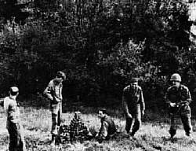

| In English |
| In English |
Atomkeller
Touristische Informationen:
| Ort: | Haigerloch |
| Öffnungszeiten: | Mai-Sept, Oster- und Herbstferien Mo-Sa 10-12, 14-17, So+Fei 10-17. März-April, Okt-Nov Sa 10-12, 14-17, So+Fei 10-17 |
| Eintrittspreise: | |
| Typ: | unvollendeter Eisenbahntunnel, ehemaliger Bierkeller und Atomlabor. |
| Licht: | elektrisch |
| Dimension: | |
| Führungen: | Ab 10 Personen nach Vereinbarung |
| Fotografieren: | |
| Zugänglichkeit: | |
| Literatur: | Menge, Wolfgang (1991): Ende der Unschuld, Die Deutschen und ihre Atombombe. Das Buch zum Film. Volk und Welt 1991 Br 280 S. 21 x 15 cm, ISBN 3-353-00841-1 |
| Adresse: |
Atomkeller-Museum Haigerloch, Egidius Fechter, Kultur- und Verkehrsamt, Postfach 54, 72394 Haigerloch, Tel. +49-7474-697-26 oder +49-7474-697-27.
E-mail: |
| Nach unserem Wissen sind die Angaben für das in eckigen Klammern angegebene Jahr korrekt. Allerdings können sich Öffnungszeiten und Preise schnell ändern, ohne daß wir benachrichtigt werden. Bitte prüfen Sie bei Bedarf die aktuellen Werte beim Betreiber, zum Beispiel auf der offiziellen Website in der Linkliste. |
|
Geschichte
| 190? | Tunnelbau für die Hohenzollensche Eisenbahn. | |
| ???? | Bierkeller des Schwanenwirts Otto Merz. | |
| 1944 | vom damaligen Berliner Kaiser-Wilhelm-lnstitut für Physik angemietet. | |
| 23-APR-1945 | besetzten amerikanische Truppen den Keller und demontierten die gesamte Anlage. | |
| 1980 | naturwissenschaftliches Spezialmuseum eingerichtet. | |
| 1991 | einige Szenen des dokumentarischen deutschen TV Films Das Ende der Unschuld über die deutsche Atomforschung und die Entwicklung der ersten Atombombe wurden hier gedreht. |
Bemerkungen
Dieser unterirdische Hohlraum ist ein zentraler Ort der jüngsten Geschichte: hier wurde wohl der erste Atomreaktor der Welt gebaut. Durch die Kriegseinwirkungen mußte eine Gruppe von Physiker Berlin verlassen. Sie führten unter der Gesamtleitung von Prof. Werner Heisenberg Versuche mit einem deutschen Atommeiler durch. Diese Versuche wurden ab 1944 hier weitergeführt. Unter den Mitarbeitern waren Carl-Friedrich von Weizsäcker und Karl Wirtz.
Der Atomkeller ist ein langestreckter, rechteckiger Raum, die Wände sind unverkleideter gewachsener Fels. Man sieht ihm die ursprüngliche Entstehung als (unvollendeter) Eisenbahntunnel noch an. Der ehemalige Forschungsreaktor befand sich am Ende dieses Ganges. Der Eingang ist mit einem großen Holztor verschlossen.
Genau betrachtet wurde hier noch kein funktionsfähiger Reaktor gebaut. Es wurde erstmal nur versucht, durch Anreicherung des Urans und durch Beschuß mit Neutronen eine Reaktion in Gang zu bringen. Dann wurden die Neutronenemissionen gemessen. Daß damals keine kritische Masse erreicht wurde, die eine atomare Kettenreaktion und eine Atomexplosion bedeutet hätte, war reines Glück. Durch den Krieg waren einfach nicht genügend Resourcen vorhanden.
|  |
|---|
| Bild: Soldaten der amerikanischen ALSOS Mission spielen mit den Uran Würfeln Bauklötzchen. |
Für die Wahl dieses Ortes ist wohl die Abgelegenheit in der schwäbischen Provinz, aber auch die geschützte, weil unterirdische, Lage ausschlaggebend gewesen. Wahrscheinlich war aber der Schutz der Einrichtungen wichtger, als der Schutz der Bevölkerung vor der Radioaktivität, gewesen. Die Gefahren der Atomtechnologie waren zu diesem Zeitpunkt noch wenig bekannt, und natürlich für die damaligen Machthaber auch nicht relevant.
Besonders beeindruckend verdeutlicht diese Unwissenheit aber ein Bild, das kurz nach der amerikanischen Besetzung aufgenommen wurde. Amerikanische Soldaten haben auf dem Vorplatz die aus Uran bestehenden Brennstäbe, die damls noch würfelförmig waren, gefunden. Diese wurden von den Wissenschaftlern kurz vorher, vor ihrer Flucht, vergraben. Was heute kaum möglich scheint: die Soldaten bauten Türmchen mit dem angereicherten Uranmaterial und posierten so für den Fotografen.
Heute wird der gesamte Raum als Museum genutzt. Verschiedene Nachbildungen, Modelle und Schautafeln geben heute einen Überblick über die damaligen Forschungen. Von der Originaleinrichtung ist nur wenig erhalten geblieben. Der Forschungsreaktor wurde rekonstruiert.
 Stadt Haigerloch in Baden-Württemberg,
offizielle Website.
(
Stadt Haigerloch in Baden-Württemberg,
offizielle Website.
(
 )
)